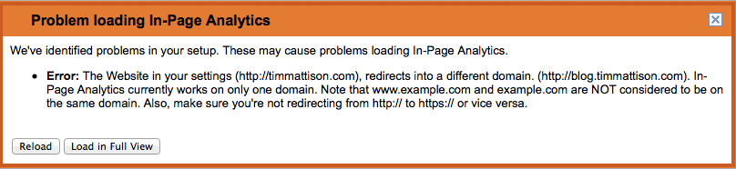

TL;DR Several routers have been found to have a backdoor installed on them that is accessible via the LAN and WAN connections by default. If you have Internet access at home or at a client location you care about then you should be testing to see if they are vulnerable with ShieldsUP.
I would recommend running this test ASAP. The list of affected routers includes Netgear, Linksys, and even “real” Cisco hardware. That list is not exhaustive.
If you need to run this test via SSH I’ve whipped up a script that will spit out whether you’re vulnerable or not based on the ShieldsUP results. It was designed to run on Mac OS (because their version of sed is busted) and tested on Mavericks and Debian Linux. Here’s what you can run:
123456
curl -L http://bit.ly/port32764 2>&1 | \ tr "\n"" " | \ tr "\r"" " | \ sed 's/<[^>][^>]*>/ /g' | \ sed 's/^.*32764/32764/' | \ sed 's/Unknown.*$//'
The response should look like this:
1
32764 Stealth
Or this:
1
32764 Closed
If you get anything else then you are vulnerable. Even if you run this test I recommend running it in a browser on the connection you’re testing just in case the script has an issue.
If you are vulnerable then the following pieces of information about your connection may have already been compromised:
Your wireless key (in the clear, not hashed)
Your router admin username and password (in the clear, not hashed)
Your router’s SSID and MAC address (this can be used to add your router to a database of access points with passwords)
Any custom settings you have on your router (port mapping to interesting devices, tunnels you thought would be hidden on a high port number, etc)
People have written plenty of applications that do scans of the entire Internet in days or even hours. This is being scanned for constantly right now and you cannot hide in the four billion addresses out there.
If you are not vulnerable but you have used the same wireless password on an older router it is probably a good idea to change your password. Nobody knows how long this has been in the wild. It has been in the firmware for a long time.
After migrating to Octopress I started getting interested in my site’s analytics again. A co-worker told me about in-page analytics with Google Analytics and how it would show you what people were doing on your site so you could tune your layout. We tried loading it and ran into some problems.
First, we got the “Loading…” spinner for a long time:
Then we got the “Still loading…” message that didn’t inspire much confidence:
Finally, we got a popup that said “Problem loading In-Page Analytics”:

What the problem was in my case was that I told Google Analytics that I wanted to track timmattison.com but my site redirects to blog.timmattison.com. My two options were to make my site actually be served from timmattison.com or to change my tracking code. I opted to change my tracking code. I’ll walk you through how I did it.
NOTE: You will lose your existing tracking data if you do this! If you want to keep your tracking data you’ll need to find another way. For me it wasn’t a big deal because I just moved my site anyway and my analytics were reset a week or two ago already.
Here are the steps:
Log into your analytics account
Click the admin button
Click “View Settings”
Scroll all the way to the bottom of the page
Click “Delete View”
Click “Delete View” again. At this point you’ll lose all of your analytics history!
Click the admin button
Click the property drop down and then click “Create new property”
Re-create your property and make sure you use the site you redirect to. In my case “blog.timmattison.com”, not “timmattison.com”.
Put your new tracking code into your site. Don’t forget to do this or tracking won’t work at all!
And that should do it. Let me know if it works for you or if you need some help.
If you’re using dd on the command-line to write SD card images in Mac OS then you may have run into a weird issue where the image is starting to write and then dd comes back and says:
1
dd: /dev/diskX: Resource busy
I ran into this multiple times when building Raspberry Pi and BeagleBone Black images. What it turned out to be was that Mac OS needed me to set the block size for some reason. I arbitrarily chose 1 MiB so my command looks like this:
After specifying the bs parameter it never happened to me again. Let me know if you ran into the same thing and whether or not this fixed it on your system.
If you are trying to use SIPML5 with Asterisk there are some gotchas that often come up. If you’re running it on Debian these tips below may help.
If you haven’t gotten that far with Asterisk and don’t care about your current configuration you can try this procedure that I use to build Asterisk myself:
Download latest Asterisk, extract it, and cd into the directory it was extracted into
Build Asterisk. NOTE: I have only had problems running a multi-job make so I would suggest you do not include a -jX option to take advantage of all of your cores.
1
make
Install Asterisk
1
sudo make install
Build the samples and overwrite your current configuration. You lose everything here so skip this step if you want to keep your config.
1
sudo make samples
Start Asterisk with crazy verbosity so you can see what is going on
1
sudo /usr/sbin/asterisk -vvvvvvvvvvvvvvg
There are two issues I ran into when trying to use SIPML5.
Error #1: no protocols out of ‘sip’ supported – in Asterisk console
In this case chan_sip.so probably isn’t built. Check in make menuconfig, add libssl-dev via apt-get, re-run ./configure, make menuselect, verify that resource module res_crypto is enabled.
Error #2: SRTP issues
If you are having SRTP issues you probably get one or more of these messages:
In the browser – Not acceptable here
In the Asterisk console – Received SAVPF profile in audio offer but AVPF is not enabled
In the Asterisk console – Insufficient information in SDP
In the Asterisk console – No SRTP module loaded, can’t setup SRTP session
In the Asterisk console – Rejecting secure audio stream without encryption details
In this case res_srtp.so probably isn’t built. Check in make menuconfig, add libsrtp0-dev via apt-get, re-run ./configure, make menuselect, verify that resource module res_srtp is enabled.
Good luck and post in the comments if it worked for you or if you need some help.
Open Chrome and point it to the SIPML5 index.html in /var/www (or the subdirectory you put it in)
Click “Enjoy our live demo”
Set these values in the “Registration” panel
Display Name: xlite1
Private Identity: xlite1
Public Identity: sip:xlite1@localhost
Realm: localhost
Password is left blank
Click “Expert Mode”
Set these values in “Expert settings”
Disable Video: Checked
Enable RTCWeb Breaker: Unchecked
WebSocket Server URL: ws://localhost:8088/ws
SIP outbound Proxy URL: udp://localhost:5060
Click “Save”
Close “Expert settings” tab
Enter “sip:2@localhost” in the “Call control” field
Click “Call”
At this point you should hear audio coming from Asterisk in a few seconds and your first call is complete. Now you can build out your server as you’d want!
Here are some screenshots of the SIPML5 settings just in case you want to visually double-check.
This is all business. I wrote this up a long time ago and never got a chance to put it online. Enjoy!
First, install SSH:
Go to Synology web GUI
Open Control Panel
Click “Terminal”
Check “Enable SSH service”
Click “Apply”
Set up your users so they have a home directory:
Go to Synology web GUI
Open Control Panel
Click “User”
Click “User Home” button at the top
Check “Enable user home service”
Select the volume on which the home directories should be stored
Click “OK”
Connect via SSH and make sure it works:
ssh as admin to the Synology box. Use the same password you use as admin on the web GUI. If you leave it blank, even if your password is blank, it will always fail. You must have a non-blank password! This is to protect against your device getting compromised from having no password.
If you get the “Diskstation>” prompt then it is working
Connect via SSH and make sure non-admin/non-root logins work:
Connect as a regular user. If you get permission denied SSH back in as root and change the desired user’s shell from /sbin/nologin to /bin/ash in /etc/passwd.
I am running Debian on a BeagleBone Black at home as a toy server/sandbox. One application that I thought would be interesting to run on it was the standard Bitcoin client. I think it is a bit strange that the latest version of the Bitcoin client (0.8.6 at the time I wrote this) doesn’t use “configure” like most other Linux/Unix applications because it leads to having to track down dependencies during a build rather than before them. On a normal system this might not be a big deal because Bitcoin compiles in just a minute or so. On a smaller device like the BeagleBone Black though it means you’ll end up checking in on it periodically over a long period of time only to find that it needs another dependency.
In their defense the github version DOES use a “configure” script. I found that out after going through a manual build on 0.8.6 so for completeness I’ll show how to compile both and you can use whichever one suits your needs. The configure script on a lean device like the BeagleBone Black still takes quite a while to run though so this should get you through doing the process just once.
You can use either the current stable version today which is 0.8.6 or you can use the bleeding edge github source. I would recommend 0.8.6 if you want something that is as stable as possible. When compiling from source you should keep in mind that your build may not be compatible with old wallet formats.
I cannot stress this enough – IF YOU HAVE AN OLD WALLET YOU ARE BEST OFF USING THE OFFICIAL BINARIES INSTEAD OF BUILDING FROM SOURCE!
Using version 0.8.6
If you want to use version 0.8.6 here’s what you need to do:
Remove the binaries, these are Intel binaries and won’t work on the BeagleBone Black anyway
1
rm bitcoin-0.8.6-linux/bin/*/*
Go to the src directory
1
cd bitcoin-0.8.6-linux/src/src
Build the source
1
make -f makefile.unix
If you follow these instructions you should get Bitcoin up and running in just one build cycle. Here are the commands that you should run:
Using the latest Bitcoin development version (NOT RECOMMENDED!)
NOTE: I do not recommend that you use this version. Currently Debian does not have libdb4.8 in its default repository and the Bitcoin client requires it to maintain compatibility with existing wallet files.
If you want to use the latest development version here’s what you need to do:
cd bitcoin
./autogen.sh
./configure --with-incompatible-bdb
make
Now you’ll have the bitcoind executable sitting on your BeagleBone Black. When you try to run it the first time it will complain that some variables aren’t set and that your config is incomplete. The output will look something like this:
1234567891011
debian@arm:~/bitcoin/src/src$ ./bitcoind
Error: To use bitcoind, you must set a rpcpassword in the configuration file:
/home/debian/.bitcoin/bitcoin.conf
It is recommended you use the following random password:
rpcuser=bitcoinrpc
rpcpassword=XxXXxXXxxxXxXXxXXXXXXxxxxXxxxxxXxXXXXXxXxxXx
(you do not need to remember this password)The username and password MUST NOT be the same.
If the file does not exist, create it with owner-readable-only file permissions.
It is also recommended to set alertnotify so you are notified of problems;
for example: alertnotify=echo %s | mail -s "Bitcoin Alert" admin@foo.com
What you’ll need to do is put these values into the ~/.bitcoin/bitcoin.conf. Then you can restart bitcoind and it’ll run and start grabbing the blockchain. IT IS INCREDIBLY IMPORTANT THAT YOU DO NOT COPY THE VALUES THAT I PUT HERE. Your file will look like this (except the rpcpassword will be whatever bitcoind told you):
This password gives someone complete access to your bitcoind instance. If you store money there and use the rpcpassword value that I put above you can and probably will lose it.
Unless you have a giant SD card on your BeagleBone Black you’ll probably want to put your blockchain on a different disk. I have my Synology home directory mounted on my BeagleBone Black via NFS (as explained in another post). It is mounted at ~/synology. In order to make sure my blockchain is on my Synology I did the following:
You may get a few errors about files not existing when you run this. This is normal and you should try to proceed and see if it works for you. I was very careful here to not put bitcoin.conf or the wallet.dat file on the Synology. You should also avoid putting those files on there. Since the remote file system is potentially a shared resource an attacker can get into that and modify or steal data. It’s best to keep the wallet.dat, peers.dat, and bitcoin.conf local to your BeagleBone Black.
At this point you can restart bitcoind. I did this in a screen session rather than make it a true service since I’m still playing around with it. Once I set it up as a service I’ll post an update and include that information as well. I am a bit skeptical that it will stay stable since after just a few hours it is already taking up 50% of the BeagleBone Black’s RAM. I guess I’ll just have to wait and see.
Periodically check your free file system space and make sure that the blockchain isn’t on your SD card. In my case I can do this:
12345
# Show the amount of free space on my SD carddu -sh /
# Show the amount of free space on my Synology NASdu -sh ~/synology/
Good luck and post in the comments if this helps you out or if you need any assistance.
I originally purchased my Synology NAS because of all of the packages that it offers and the fact that it was supposed to give me one less thing to manage. After a few failed attempts at getting OpenVPN to work and some Plex issues I decided that I needed to have something a little less opaque that I could install different packages on. I wanted something small, low power, and solid state so I decided to use the BeagleBone Black.
I tried using both CIFS/Samba and sshfs to mount the Synology’s filesystem but both of them had extremely strange issues with the applications I planned on using. I wouldn’t recommend either of them for production work involving Linux and NAS. Often it would tell me that files didn’t exist even though I could clearly see they were there. After moving to NFS none of this happened anymore.
NOTE: Security here is all done by IP address so this is not suitable for a sensitive environment!
Here are the steps I went through to connect my first enable and configure NFS on my Synoloy NAS:
Make sure your BeagleBone Black has a static IP and that you know what it is
Log into the Synology web GUI as an admin
Click “Control Panel”
Click “Win/Mac/NFS”
Click “NFS Service”
Make sure that “Enable NFS” and “Enable NFSv4 support” are checked
Click the link that says “Shared Folder”
Find and select the directory you want to share. In my case it was my user account’s home directory so I selected “homes”.
Click the “Privileges” drop down
Select “NFS Privileges”
Click “Create”
Enter your BeagleBone Black’s IP address into the “Hostname or IP” field
Make sure that the “Privilege” field is set to “Read/Write”
Make sure that the “Root squash” field is set to “No mapping”
Make sure that “Enable asynchronous” is checked
Make sure that “Allow connections from non-privileged ports (ports higher than 1024” is NOT checked
Click “OK” in the “Create an NFS rule” popup
Take note of the “Mount path” field in the “Edit NFS privileges of homes” window, you’ll need this later
Click “OK” in the “Edit NFS privileges of homes” window
Log out of the Synology web GUI
Now you have your Synology all set up to accept NFS connections from your BeagleBone Black. Here are the steps to do that:
Connect to your BeagleBone Black via SSH as a user that can run sudo
Install the NFS utilities and client by running “sudo apt-get install nfs-common”
Go to your home directory
Create a directory for your Synology mount point. I chose “synology”.
Mount your directory using the “Mount path” from above along with any additional paths to get you to the desired directory you want. My mount path was “/volume1/homes” but I wanted “/volume1/homes/tim” for my actual home directory. The command I used was “sudo mount -t nfs synology:/volume1/homes/tim /home/tim/synology/”
Test out your newly mounted Synology NAS
You can now add this to your /etc/fstab file if you’d like but I prefer to keep it in a script. I have a script called mount-nfs.sh in my home directory that I run when necessary since I’m still testing out NFSv4. Once I get it stable I’ll make sure that I get it to mount automatically the proper way and update this post.
Potential issues
If you receive an error message that says “mount.nfs: access denied by server while mounting synology” you probably have the wrong IP for your BeagleBone Black in the Synology configuration.
If it appears to mount the volume but no files show up try unmounting it and re-mounting it. If you unmount it successfully and when re-mounting it again it complains that the device is busy it is possible that your BeagleBone Black’s IP address changed. This happened on my test machine when its IP went from 192.168.1.109 to 192.168.1.110. It didn’t give me the access denied error message but instead exhibited this weird behavior. If this is the case make sure you have your IP assigned statically, reboot the BeagleBone Black, verify the static IP in the Synology configuration again, and then try re-mounting the path. After that mine started working again.
Good luck! Post any success stories or issues in the comments. I’ll do my best to help out if possible.
Reading resources in Java has always been a mystery to me. It’s not because I don’t understand how to do it but more that I do it so infrequently that
I always forget what I need to do. In Java’s defense once you understand what you need to do it’s actually very simple. I’ve run into this issue
many times in a professional context. Usually it is just trying to load a simple resource so I can keep it inside the JAR file I’m delivering to a
client.
The sixty second explanation of how to do this is as follows. If you’re using an IDE and have a standard project layout you can simply follow these steps:
Under your src/main directory create a new directory called “resources”
Put your static file in the “resources” directory. For example, “jquery-1.10.2.min.js” if you want to serve this file from an embedded web server.
And that’s it! I recommend the long way because you can step through it if the file isn’t found and get some insight into what happened rather than
just getting an opaque NullPointerException. If you don’t have the file in the directory, or you have the wrong file name, after attempting to get
the jqueryUrl it’ll just be NULL. If that happens just check to make sure that you have the file name correct, resources is spelled correctly, and
it is in the right location.
Good luck! Post in the comments if you find this useful or if you have trouble.